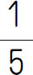
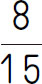
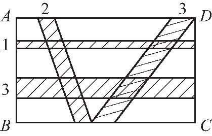
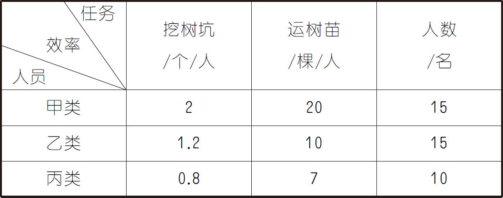

1．计算：587÷26.8×19×2.68÷58.7×1.9＝_____．
2．一个数的

等于
的6倍，则这个数是_____．3．在长500米，宽300米的长方形广场的外围，每隔2.5米摆放一盆花，现在要改为每隔2米摆放一盆花，并且广场四个顶点处的花盆不动，则需要增加___盆花，在重新摆放花盆时，共有___盆花不用挪动．
4．小张有面值2元和5元的人民币共34张，总面值110元，问2元的人民币有___张，5元的人民币有___张．
5．定义“△”是一种新运算，规定：a △b ＝a ×c ＋b ×d （其中c ，d 为常数），如：5△7＝5×c ＋7×d ．如果1△2＝5，1△3＝7，那么6△1000的计算结果是______．
6．幼儿园的老师给小朋友发苹果，每位小朋友发4个，多出12个，每位小朋友发6个，就少12个，则共有苹果___个．
7．小明骑车到A、B、C三个景点去旅游，如果从A地出发经过B地到C地，共行10千米；如果从B地出发经过C地到A地，共行13千米；如果从C地出发经过A地到B地，共行11千米，则距离最短的两个景点间相距___千米．
8．如果a ，b 均为质数，且3a ＋7b ＝41，则a ＋b ＝_____．
9．一个正方体木块放在桌面上，每个面内都画有若干个点，相对的两个面内的点数和都是13，京京看到前、左、上三个面内的点数和是16，庆庆看到上、右、后三个面内的点数和是24，那么贴着桌面的那个面内的点数是_____．
10．已知三个连续偶数的和比其中最大的一个偶数的2倍还多2，这三个偶数分别是___、___、___．
11．有红球和绿球若干个，如果按每组1个红球、2个绿球分组，绿球恰好够用，但剩5个红球；如果按每组3个红球、5个绿球分组，红球恰好够用，但剩5个绿球，则红球和绿球共有___个．
12．A、B、C、D四位同学看演出，他们同坐一排且相邻，座位号从东到西依次是1号、2号、3号、4号．散场后他们遇到小明，小明问：“你们分别坐在几号座位．”D说：“B坐在C的旁边，A坐在B的西边．”这时B说：“D全说错了，我坐在3号座位．”假设B的说法正确，那么4号座位上坐的是_____．
13．一架飞机从甲地到乙地，原计划每分钟飞行9千米，现在按每分钟12千米的速度飞行，结果比原计划提前半小时到达．甲、乙两地相距多少千米？
14．如图所示，长方形ABCD 的长为25，宽为15．四对平行线截长方形各边所得的线段的长已在图上标出，且横向的两组平行线都与B C 平行．求阴影部分的面积．

15．一次数学测验，某班全班平均分为91分，男生平均89分，女生平均92.5分，这个班女生有24人，男生有多少人？
16．甲、乙两地相距360千米，一辆卡车载有6箱药品，从甲地驶往乙地，同时一辆摩托车从乙地出发，与卡车相向而行，卡车的速度是40千米/时，摩托车的速度是80千米/时．摩托车与卡车相遇后，从卡车上卸下2箱药品运回乙地，又随即掉头．摩托车每次与卡车相遇，都从卡车上卸下2箱药品运回乙地，那么将全部的6箱药品运到乙地，至少需要多长时间？这时摩托车一共行驶了多长路程？（不考虑装卸药品的时间）
17．40名学生参加义务植树活动．这40名学生可分为甲、乙、丙三类，每类学生的劳动效率如表所示．如果他们的任务是挖树坑30个，运树苗不限，那么应如何安排人员才能既完成挖树坑的任务，又使树苗运得最多？
